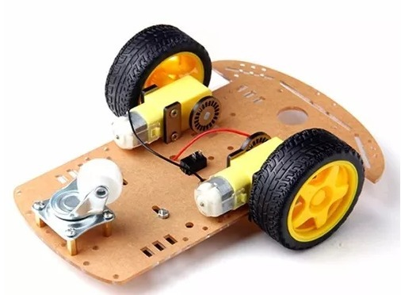
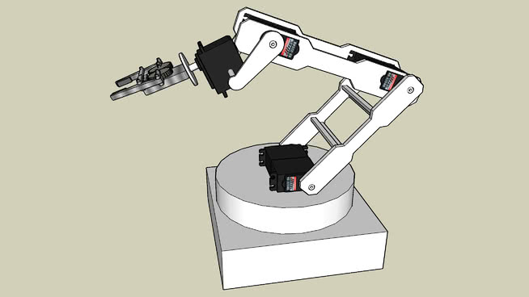
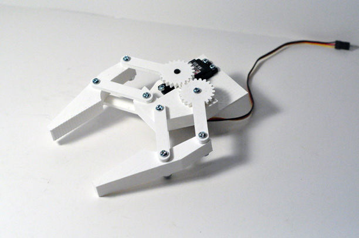
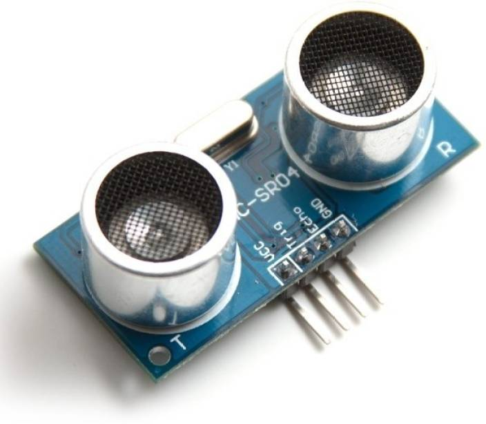
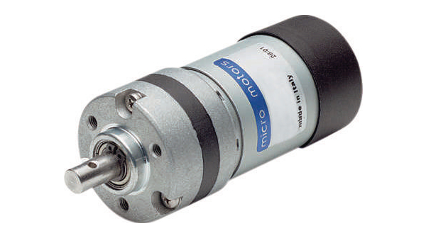
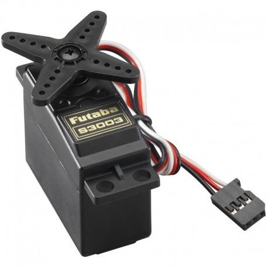
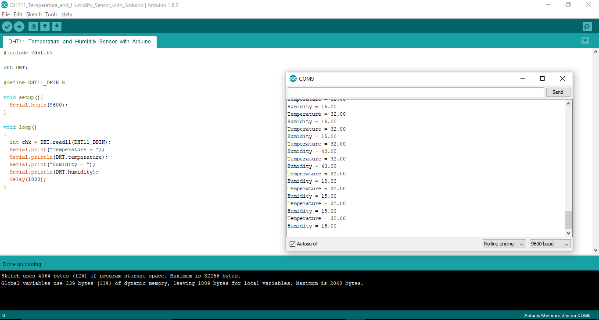

What makes a robot? - Parts of the Robot
According to the specifications of the game's rules and tasks, you will need to build a robot that you can easily achieve the tasks with. Wheeled robots are the most common type of robots presented in the Roboken competitions.
Industrial level components of robots are commercially available as a full robotic kit all over the world and you can buy them at affordable prices even online. But one of the virtues the Roboken challenge is looking for is originality and creativity. Which is usually mostly found among robots made with locally available materials like wood, plastic, and scrap metal because it shows how far you have gone to make the robot yourself as a student with limited resources. Buying the basic components is not a favourite idea among many Kenyan institutions, although you are allowed to and of course you will loose the marks for innovation and design during the evaluation.
In fact, Roboken has awards for the most innovative and best designed robots of the year. I have won both of them before.
The game robots are usually made up of the following main components:
- The Chasis: This is the base of the robot where the wheels are mounted. The chasis should be strong enough to support the full body and weight of the robot. 
-
The Arm: The arm supports motions that are useful during picking and dropping of objects.

-
The Gripper: Generally considered part of the arm, the gripper is an important component of the robot that should be designed with the arm in mind. It's main use is to firmly hold and release the objects that are to be picked and dropped.

-
Electronic componets: You can mount as many electrical components as you want onto your robot depending on your needs. Roboken allows you buy these or design your own as you wish. The art is in how well you intergrate it in your work. Some of the most common of these include:
-
Line Tracking Sensor: Aid in following a line. In the Roboken competitions, the lines are usually white on a black surface. We normally design ours as part of the student training program, but if you decide to pusrchase one there are a variety online.
The Sparkfun line follower sensor is one of my best commercially available line tracking sensors.
-
Object / Proximity Sensor: You do not want your robot to be hitting things blindly while it moves. That is why you will need the proximity sensors to help detect when there is an obstacle so the robot can change direction or stop or perform another action.

This is the ultrasonic sensor module -
DC Motors: Jargons aside, a DC motor can rotate fully on and on in either anticlockwise or clockwise directions which makes it the best choice of motor that you should use for the wheels.

-
Servo motors: Similarly jargons aside, a Servo motor rotates in terms of angular position allowing you to control precise angles where it should rotate to and stop making it the best candidate for use with arms and gripper. Typically you can do much more with a servo motor than a dc motor including using it for the wheels, but that is beyond the scope of this article.

-
Line Tracking Sensor: Aid in following a line. In the Roboken competitions, the lines are usually white on a black surface. We normally design ours as part of the student training program, but if you decide to pusrchase one there are a variety online.
-
Micro-controller: The arduino series of micro-controllers are the most common type of micro-controllers used in the Roboken robotics championships. It will be used to control all the other electrical and electronic components that will be mounted on the robot through the use of a program. The board shown below is an Arduino Mega 2560.

-
Program code: Finally, your robot will be of no use in the Roboken championships if it cannot execute the tasks autonomously since this is a requirement. You will therefore need to write a computer program that you can then upload to the micro-controller to run the robot.
For the arduino micro-controller we use the open-source Arduino Software for it. You can download it here https://www.arduino.cc/en/Main/Software It's free of charge.
